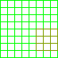
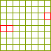

Balanced Annihilation:Giving Orders

|
Warning! This page is outdated! The information displayed may no longer be valid, or has not been updated in a long time. Please refer to a different page for current information. |
<--Back to Balanced Annihilation
Issuing Orders/Building
Left Mouse Control (Mouse 1)
As covered in Selecting/Deselecting Units, left clicking is the primary control for selecting units. If a pending order is issued using the menu that appears on the left side of the screen or using a Hotkey, the mouse pointer will change to a symbol representing this action. If there is a pending order and you left click on a valid target for the action the selcted units will perform this action on that target, otherwise the units will "do their best" to perform the action, which could mean just cancelling the Order.
The menu will show all available commands for all selected units, except for wait and self destruct, in the menu. Mousing over a menu item will also display the Tooltip for this item.
Right Mouse Control (Mouse 2)
Right clicking will always give the selected units the default action for the target, if the order is invalid for some members of the group, it may or may not choose a suitable action for those units to perform.
Queueing Orders
Holding down SHIFT while giving a unit an order adds that order to its queue. Queueing orders means that you can tell a unit, or a group of units to do multiple tasks, and they will go off and do them in the order they were given without any more input from you. For example, if you you want a Construction Vehicle to build a line of defences around your base, you can select the structure you want, hold shift and click where you want them few times. The construction vehicle will now go and build (or try to build) all of the selected structures while you go and pay attention to other things. You can queue any order, and any number of orders. It would be possible (but not very smart) to order your commander to build a whole base for you while you go off and have lunch!
If you have a unit selected, holding SHIFT will show the unit's order queue. Green lines indicate movement orders, red lines attack orders, light blue lines patrol orders, dark blue lines Guard orders, and purple lines reclaim orders. Green rectangles will show where you have construction orders queued. If you have a construction unit selected, you'll see ghosted images of the buildings that unit is going to build inside the green rectangles, linked by green "movement order" lines.
You can remove an order from the order queue by holding shift and repeating the same order. This doesn't work very well on area or movement type orders but can be useful for cancelling the construction of an un-needed building.
Another use for this is to issue complicated movement orders. Say you want your army to attack your enemy, but you want to attack from the side, where they are their weakest. Just issuing one move command to attack the side of their base would send our units moving THROUGH your enemy's base to try to get to the side. This is not very good. But if you tell your units to move to a location AWAY from the base and them back towards it, by queuing up two or more move commands, this problem can be successfully avoided. Or you could tell your units to attack certain buildings in a certain order, for instance attack all the outlying metal extractors, and them go for the power plants in the base, they will follow these orders oblivious to anything else, while you go in and attack the other important things.
This is also good for building complicated patrol paths. Note that units given a patrol order will return to their starting point after executing the last patrol order, so queuing up other orders after a patrol order is very pointless.
When you issue a order without holding shift, it clears the unit's queue and immediately starts it executing that order.
Learning how to use your units' order queues is a vital part of the game.
Building Buildings
When a contruction unit is selected you will see images in it's command list (menu on the left) representing the buildings that it can build. These are referred to as "buildpics". Mousing over a buildpic will make the tooltip show information about the structure or unit. Clicking on a structure's buildpic will select it for contruction. If multiple units are selected, all available structures (and mobile units) will appear in the command list. Choosing to build a building when you have multiple units selected will usually assign all units to help build those buildings if this is a valid command.
When you build a unit with a non-factory you will need to choose a ground plate for it to be built on (represented by a grid on the map under your cursor).
|
If the grid is green, you can build at that location. |
|
|
If the grid is green with some yellow-green squares in it somewhere, it means the groundplate is blocked by a mobile unit or reclaimable feature. This situation should be resolved automaticly by the constructing unit. |
 |
|
If the grid has any red squares in it, this is an invalid build position, the non red squares of the grid represent unobstructed parts of the obstructed grid. |
 |
{kind=link}
{kind=link}
{kind=link}
Build (select structure then left-click)
Builds whatever structure selected in the location clicked by moving the builder unit selected there.
Rotate the Building
Press [ or ] while placing the Building to rotate it 90°. On German Keyboards, use ß and ´
Build Queue (select structure then shift left-click)
Puts the build order into your unit's order queue, just as with any other order.
Build Line (SHIFT)
(select structure then shift left-hold-drag then release left mouse)
|
Adds a straight line of the selected structure into your unit's build queue starting where you first depressed the leftmouse and ending at the location you release the leftmouse. |
{kind=link}
Build Grid Line (SHIFT CTRL)
(select structure then shift ctrl left-hold-drag then release left mouse)
|
Adds a straight line of the selected structure into your unit's build queue starting where you first depressed the leftmouse and ending aligned to the location you release. This line, however, will be either vertical or horizontal and aligned to the map's grid. |
{kind=link}
Build Perimeter (SHIFT CTRL ALT)
(select structure then shift ctrl alt left-hold-drag then release left mouse)
|
Adds an empty square or rectangle box of the selected structures to your unit's build queue. The location you first depressed the leftmouse is one corner border and the location you release is the opposing corner. If you move the mouse straight up your box will look like a grid alligned vertical line. |
{kind=link}
Build Block (SHIFT ALT)
(select structure then shift alt left-hold-drag then release left mouse)
|
Adds a filled in square or rectangle box of the selected structures to your unit's build queue. The location you first depressed the leftmouse is one corner border and the location you release is the opposing corner. If you move the mouse straigt up your box will look like a grid alligned vertical line. |
{kind=link}
Build "Wall"
|
Add a wall of the selected structure surrounding the clicked unit to your builders build queue. Select a builder unit, select building to build, then hold CTRL + SHIFT ant move your mouse over selected building. You should see a "wall" of your selected buildings around it. Click on the structure and the building will begin. |
{kind=link}
Space Build (MOUSE4/Z and MOUSE5/X)
(select structure then shift ctrl mouse5/mouse4 or z/x)
|
Spring allows you to automatically specify the spacing between buildings for batch (line, perimeter, block, wall) orders. This spacing is set with the z (decrease by one) or x (increase by one) keys. The default spacing is zero, with the buildings pressed right up against each other. Each level of spacing gives you an extra 2x2-sized (LLT-sized for OTA-based mods) space in between each structure on all 4 dimensions. Similarly, each click of the spacing contract button(z) removes that amount of space. You cannot remove spaces when structures are already placed with no spacing between them. This is most useful when you're holding down SHIFT CTRL, SHIFT ALT, or SHIFT CTRL ALT to give a line/perimeter/block order. When doing this, you can actually see the spacing between the structures increase or decrease. Note: The mapping of this function to Z and X is as of 0.70b1. As Z and X are used by many players for other units, it's valuable to note that the key mappings for "mouse4" and "mouse5" can be changed in the "uikeys.txt" file in your spring directory. If you have a 5-button mouse, buttons 4 and 5 are probably the side buttons. Experiment with your mouse to find out where they are on it. |
{kind=link}
{kind=link}
{kind=link}
{kind=link}
Building Mobile Units (Building with Factories)
Click on the picture of the unit you want to queue up for building. You can queue up many units this way. A number will appear over the buildpic, showing how many units of that type are in the queue.
Hold SHIFT while clicking a buildpic to order 5 units at one time, hold CTRL while clicking to order 20, hold CTRL SHIFT while clicking to order 100. Hold ALT while clicking a buildpic to cancel the current construction and starting the constuction of that unit immediately. Right clicking a buildpic will cancel 1,5,20 or 100 orders for that unit using the same SHIFT and/or CTRL modifiers mentioned before. Note that you can use, say, ALT SHIFT to put five build orders for that unit at the start of the queue.
Assigning a group number to a factory will cause the factory to pass this group number to the units it builds.
You can give factories a Move, Guard, Patrol, or other order and the factory will pass it on to the units it builds. You can use this to choose a better place for new units to go after being built, or to send them straight into construction or a battle without micromanaging them. This includes assigning queued orders (for example: multiple move points to get a unit out of the base in a straight line and then a guard repair order on a specific large unit under construction and then a guard order back on the original factory to increase build speed). You can also issue orders to the unit currently under construction by clicking on it first instead of the factory.
Note that it is currently possible for units to get stuck in factories. Thus, it's a good idea for the first order to always be a move order that takes the unit directly out of the factory doors.
Construction/Repair units can be assigned to guard a factory to increase the speed of production for each of the units the factory makes. They can also be assigned to Repair the unit currently under construction to just help with its construction.
Default Commands and Hotkeys
It is assumed that if a unit does not have an ability, it will not be able to perform that action, and will ignore any orders of that type given to a group it's part of. Priorities have been noted.
Active State (X)
This command toggles the "active state" of a unit, turning it on or off. If a unit can be turned off this will usually stop it's prodution and/or use of energy and/or metal and/or stop it from doing something and/or change it's stats. For example, turning off a radar jamming building would make it stop drawing power and prevent it from jamming radar. Turning off a solar collector would stop it from producing power and cause it to "close up", increasing it's armor. This behaviour is unit-scriptable so it could technically do anything the designer of the unit wants it to do.
Attack (A)
Orders the unit to attack the target or location. If ordered to attack a unit, the selected unit or building will keep firing at the targeted unit/building until it is dead. If the targeted unit moves out of range, or out of sight, the selected unit will move to follow it and continue to attack it. Note that units are very stupid about this, and will continue to execute this order even if they come under heavy attack.
If ordered to attack ground, the unit will never stop until told to do so by the user. Note that units automatically attack any visible enemy units inside their range, and will pursue them (depending on their Move State) a certain distance before returning to their starting location.
Capture
The unit will move up to the targeted unit or building and attempt to convert it to your team. So if the enemy has built a Geothermal power plant and forgotten to protect it, grab a nearby construction unit and try to capture it! Note that this takes quite a while, and it is not a good idea to try to capture a unit that is shooting at you. The closer the unit is to 0 health the faster it will be captured. Be careful to set your Commander's fire state to "hold fire" if you are trying to capture a unit with him, as his laser will likely destroy the target before it is captured.
Hold the Ctrl key to issue an area capture command that captures allied units also.
Hold the Alt key to issue a persistent area capture order. This means the order will remain even when there are no units left to capture.
Hold the Meta key (space) to issue an area capture command that will only attempt to capture units that have 100% health or capture progress.
Cloak (K)
Makes a unit inivisble to the enemy's units. Enemy units will not be able to see a unit while it is cloaked, but will still be able to spot it (and fire at it) if they can see the unit VIA radar. Note that this usually uses an immense amount of energy, uses even more energy when the unit's moving, and units uncloak for a few seconds when they shoot. This means that you might want to set the unit to Hold Fire, so the unit doesn't accidentally reveal itself. Cloaking a unit also causes atacking units to lose their target lock and move on to a new target, unless they have radar coverage.
DGun (D)
Disintegrator Gun. A weapon used by the Commander. It is a very powerful gun that will kill ANY unit in game. Use it in early game to ward off rushes, or against super units like the Krogoth, or the Goliath. Be careful, as it also destroys your units and buildings at the same time! Uses alot of energy to fire, so make sure you have the required energy before attmpting this.
Fire State
Fire States are fairly simple to work out, and are fairly self explanatory. There are three different states, each with their advantages and disadvantages.
Fire at Will : This is the default setting for all new units. It makes units fire at any visible enemy unit within range. It is good for general destruction.
Hold Fire : This makes units never fire unless ordered to. Even if they are attacked, they will not do anything. This is good for sneaking units around the back of a base, as they will not draw any attention to themselves, or for units that draw a lot of power when they fire, or which have a long reload time.
Return Fire : Units only fire at untis that shoot at them. Again, this is good for sneak attacks, but makes them a little smarter and better at defending themselves.
Guard (G)
The current selection will "guard" the target owned or allied unit.
When a unit is ordered to guard another unit it will:
1) Attempt to follow it's target anywhere, staying relatively close to it.
2) Defend the target if it becomes threatened and the guard has weapons.
3) Repair if the target if it gets damaged and the guard has repair capabilities.
4) Assist in any construction projects the target is working on if the guard can repair. This also applies to construction units guarding a factory.
5) Assist any repairs conducted by the target (if capable).
6) Assist any resurrection performed by the target (if capable).
Guard orders "chain". So if Unit 1 guards Unit 2, Unit 2 guards Unit 3, and Unit 3 is told to build or repair or attack, Units 1 and 2 would also join Unit 3 in doing what it was ordered to do.
High Trajectory
If this option is available, click the button to toggle this state.
A unit with High Trajectory mode enabled will shoot almost vertically, allowing it to shoot over hills as well as other units and masking the direction/source of the shot.
Using this mode reduces accuracy greatly and also the increased distance of the higher trajectory will increase the amount of time a shot will take to reach it's target.
With some mods, units may gain extra firepower or a larger area of effect when told to use High Trajectory mode.
Move (M)
There are 4 ways to move a group of units in Spring:
1) The usual move to point (works for single units or groups, pretty standard.)
2) Holding down on ctrl while giving a move order issues a "Move in formation" command. In this case, formation means whatever formation or configuration the units were in when they were given the order.
3) Holding down Alt during a move command issues a "Move into a square". Units will try to move into a nice, organised formation. However, this rarley ever works, as units tend to shove each other out of the way when trying to get into position.
4) Click and drag at the waypoint and it issues a "Move to this line" command. In this case the line can be oriented however the user wants. The shorter the line the deeper the units will line up. The longer the line, the more the units will be able to line up along with it. If there's enough units in the group they will form double or even triple lines, which may cause some shoving, as with the "Square Move" command.
Notes: Certain formation commands might not work on every type of aircraft.
By turning on Repeat, units will move back into formation when shoved out of position. However, this should be used with caution, as it can lead to problems when trying to move units later.
Left-clicking with a unit selected is usually as good as pressing the "M" key if the selected point doesn't have any objects at that location.
Move State
Like Fire State, this controls how the unit will maneuver in response to enemy units. Units set to Hold Position will not move very far from their current position, if they move from it at all. Units set to Maneuver will move a moderate distance from their current position while chasing enemies. Units set to Roam will move however they want to.
Maneuver is usually the most sensible setting here, as Roam leaves you open to a clever enemy pulling your units into heavy defences.
Patrol (P)
A unit given a command to patrol will move back and forth between its current position and the taget location. Holding CTRL when giving a patrol command to a selection with more then one unit will cause the units to move to a location relative the the target point compared to the distance of the unit from the center of the selection. Holding SHIFT while issueing a series of patrol orders will cause the unit to repeat this command, moving from current location to the targets and "circle around" through the points on the queued path.
When a unit is patroling, it will do whatever it can to "help out" along the path of it's patrol route. A construction unit will aid in construction projects, a combat unit will engage enemies, etc. How far it will go out of it's designated route is partially defined by line of sight, radar coverage, move state, and fire state.
Hold the Alt key to issue a resurrection patrol order. This works like normal patrol, except that units will not reclaim corpses that can be resurrected. These will instead be resurrected if the patrolling units are capable.
Hold the Meta key (default space) when issuing the patrol order to make the patrolling units attempt to reclaim enemies (if capable).
Hold the Ctrl + Meta keys to make the patrolling units attempt to reclaim enemy units only.
Examples of Patrol Behaviour:
- If a unit that can repair patrols within range of a damaged (or under contsruction) owned or allied unit, the patrolling unit will repair the damaged unit.
- If a unit that can attack patrols within range of an enemy it will attack the enemy unit.
Reclaim (E)
Reclaiming will break down something and give you metal/energy from it. Only certain units (namely, construction units and the Commander) have reclaim capabilities. Wrecks, enemy units, features, and your own units are reclaimable.
Energy and metal will be added to storage when reclaiming process is complete. You must have enough storage space to hold the energy/metal, or you will lose it!
Default Behavior: Simply clicking on a feature, a wreck, or an enemy unit with a construction unit will reclaim it by default. Hitting 'E' and dragging with the left mouse button issues an area reclaim order, and tells the unit to reclaim any wrecks or features in that area.
Hold the Ctrl key to force area reclaim. This will reclaim non-autoreclaimable features (such as dragon's teeth), starting with metal features first. It will also try to reclaim stuff currently being resurrected by friendly constructors.
Hold the Alt key to make the area reclaim order persistent, e.g. the order will remain even when there is nothing more to reclaim.
Hold the Meta key (default space) to area reclaim units and features.
Hold the Ctrl + Meta keys to reclaim enemy units only.
Assigning multiple units to reclaim a target may not increase the speed at which the target is reclaimed, depending on mod settings.
Repair (R)
When repairing a damaged unit, uses a percentage of the metal and energy costs associated with a damaged unit to increase the speed at which a unit regains health. This percentage is set per-mod, and many mods have it set to zero, making repairs free. When repairing a unit that is still being constructed the unit will help build the target, increasing the speed at which the unit is completed but also increasing the rate at which your resources are consumed.
The repair command is cancelled when the target's health reaches 100%, so if a unit under construction is damaged the repair command will complete the building of the target and then continue to repair until the unit is at full health. Valid targets are any damaged units and units currently being constucted.
This is the default command for owned and ally units that are not at full health, including units being constructed by other units and factories, when a construction unit is selected.
The more units that are assigned to repair another unit, the faster the unit will be constructed/restored to full health, but the energy and metal costs will increase accordingly.
Hold the Ctrl key to force area repair. This means the units will attempt to repair also units that are currently being reclaimed by friendly builders.
Hold the Alt key to issue a persistent area repair order. This means the order will remain even when there are no units left to repair.
Hold the Meta key (space) to issue an area repair command that will only attempt to repair things that are not currently under construction.
Assign/Select Current Group (Q)
This key has a several functions.
If you have one unit belonging to a group selected, when pressing "Q" it will select all the units that belong to this group.
If several units are selected, and one belongs to any group, then, when pressing "Q" it will assign ALL the selected units to this group, and after that will select the group.
Finally, if you have a group created, and want to "detach" units from it: select the unit you wish to detach, and press Shift "Q", selected units will be removed from the group they belonged.
See Default selection Controls for more info on groups.
Repeat
When turned on, Repeat moves any orders that have been completed to the back of the order queue. For instance, if you tell a unit to more to one side of the base, and then to the other side of the base, it would keep going back and forwards forever, because when it completed the first move command, it would place that command at the back of the queue again. This is useful when building units. If you want a factory to continuously pump out a Samson, then a Flash, then two Stumpy's, issue the orders, turn on repeat, and watch the units roll out!
Repeat may literally be used with any command set. The power of this command must not be underestimated! For example, it is possible to create a an air transport whose sole purpose is to fly units to the front lines or to another area automatically from the factory: <Repeat> Group-Load, Group-Unload
It is possible to create a "repair zone" using Group-Repair and repeat: <Repeat> Group-Repair
It is possible to create a "reclaim zone" at the front lines using a nano tower or other construction unit, and repeat: <Repeat> Group-Reclaim
It is even possible, to bypass the limitations of the Patrol command using repeat. Units on patrol tend chase down enemies; however, if Repeat is used in conjunction with the standard Move command, you could pontentially set artillery units to go near the enemy front lines, fire several shots, and then come back to a repair zone, only to go back and repeat the cycle!
Restore
Drag an area of terrain to restore the terrain to it's original form if it has been "deformed" by explosions or the contruction of a building.
Resurrect
In XTA only the Arm F.A.R.K. and the Core necro can use this order. Use this to ressurect dead units. If you see some wreakage on the map from some dead units, select a FARK or Necro and ressurect the dead units to have them fight along side your army. A good way to gain the upper hand later in game is to ressurect your opponent's army after a battle. This does take a lot of energy and metal(half as much as building the unit originally), and ressurected units will start on 1 health, so are very vunerable.
Ressurect is the default order for corpses from destroyed units, this unfortunately includes wreackage that can't acctually be resurrected.(Tip: if you cannot tell what unit the wreakage was then most likely you cannot resurrect it)
Dragging this order as an area will cause all selected units to ressurect all valid targets in that area. If multiple units are given a common ressurect order, the target will be resurrected faster but only one of them (probably the one the engine decides actually completed the process) will try to restore it to health. In the case of an area command the units who do not stay behind to repair the target will move on to a new target.
Hold the Ctrl key to force resurrection. This means the units will also attempt to resurrect corpses that are being reclaimed.
Hold the Alt key to issue a persistent area resurrection order. This means the order will remain even when there are no corpses left to resurrect.
Hold the Meta key (space) to issue an area resurrection command that will only attempt to resurrect corpses with 100% metal or resurrect progress.
Self Destruct (CTRL D)
Will detonate the selected units/buildings in a very spectacular explosion after a specific count-down (default is 5 seconds). Use this when destroying units/building that are in the way, or when detonationg mines or crawling bombs. A way to literally go out with a bang is to press Ctrl A (Select All), Ctrl D (Self Destruct). Note that this will make you lose the game, but is very spectacular!
Stop (S)
Makes the selected units stop any queued commands immediately. They will not automatically stop attacking units, unless their fire state is set to Hold Fire, but they will cancel any ongoing attack orders, allowing them to select and engage targets based on their default AI.
Wait (W)
Start issuing your chain of commands (Holding Shift). BEFORE a command that you want your units to wait for a go command to execute, press Shift W, and then continue queuing up orders. Now, to cancel the first wait queued on this group, and have them continue with the rest of the queue, select the units when they're waiting and hit W. Many of these wait waypoints can be chained together. Note that if you hit W before some or all of the selected units have completed the command before the wait, only those that have completed the preceding command will continue.
Units are automatically issued a "stop waiting" command when loaded into and unloaded from a transport.
Wait is a standard command; by using Repeat in conjunction with wait, it is possible to create precisely timed strike and raiding groups.
Unbinded Commands
These have no default hotkeys. You must bind them yourself, either by typing in the console something like /bind shift+k timewait 60 enqueued or by editing your uikeys.txt file.
GatherWait
- Use it after a movement command of some sort (move / fight)
- Units will wait until all members of the GatherWait command have arrived at their destinations before continuing
- If you have "gathermode" enabled, a gatherwait command is automatically added after every move and fight command (the default move cursor will be changed to the gather cursor to indicate that you are in gathermode)
SquadWait
- Usually used with factories (but does work on groups without a factory)
- Pick a factory, and give it a rallypoint, then add a squadwait command with the number of units you want in your squads. units will wait at the initial rally point until enough of them have arrived to make up a squad, then they'll continue along their queue.
DeathWait
- Units will not wait on themselves
- One possible use is to have a group of aircraft wait for an enemy's anti-aircraft defenses to crumble before passing over their ruins to attack.
TimeWait
- With the time in seconds